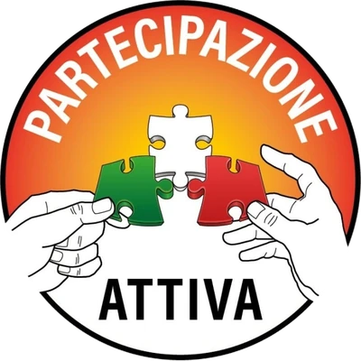

La Rete APE nasce per dare forma concreta a un’idea semplice e radicale: i cittadini devono poter esercitare la sovranità ogni giorno, non solo ogni cinque anni. Si ispira al progetto dell’Assemblea Popolare Ecumenica elaborato da Angelo Nicotra, Presidente di Partecipazione Attiva.
I risultati del “divide et impera” sono misurabili: alle elezioni politiche del 25 settembre 2022 non ha votato il 39,84% degli aventi diritto: oltre 20 milioni di cittadini — il minimo storico della Repubblica. Una massa enorme che ha rinunciato a decidere il proprio futuro, consegnando deleghe in bianco a pochi politici, a prescindere dalla posizione ideologica.
Non è apatia. È la conseguenza diretta di una frammentazione deliberata: associazioni, movimenti e comitati che non si parlano, che si ignorano o si combattono, incapaci di costruire una proposta comune. La Rete APE nasce per rompere questo schema.
La Rete è aperta a tutti i soggetti civici — associazioni, gruppi di cittadini, movimenti, piccoli partiti, comitati — che condividono i principi fondativi e vogliono costruire insieme una democrazia più partecipata, trasparente e vicina alle persone, specialmente alle più fragili.
I principi fondativi
Ogni soggetto aderente ha lo stesso peso decisionale, indipendentemente dalla dimensione o dalla storia. Nessuna gerarchia interna.
Aperta a tutti, senza distinzioni ideologiche, geografiche o sociali. L’unico requisito è condividere i principi e agire nell’interesse dei cittadini.
Ogni decisione, ogni atto, ogni accordo della Rete è pubblico. Nessuna porta chiusa, nessuna trattativa segreta.
Le politiche e le iniziative della Rete mettono al centro chi ha meno voce: anziani, giovani precari, persone con disabilità, lavoratori in difficoltà.
Le proposte nascono dai territori e dai cittadini, salgono attraverso la Rete e diventano indirizzo politico. Non il contrario.
La Rete non è controllata da nessun partito, lobby o potere economico. Risponde solo ai cittadini che la compongono.
Chi può aderire
Possono aderire alla Rete APE tutti coloro che condividono il progetto ed i suoi principi fondativi, vogliono collaborare e dare il proprio contributo al fine di riuscire a realizzarlo:
- Ogni singolo cittadino/a
- Associazioni di cittadini e comitati civici
- Movimenti politici e liste civiche
- Piccoli partiti locali o nazionali non presenti nelle istituzioni
- Gruppi di volontariato e solidarietà sociale
- Organizzazioni per la tutela dei diritti
I soggetti aderenti
🍃 Primo soggetto aderente

Altri soggetti in fase di adesione. Vuoi essere tra i primi?
Come aderire
L’adesione è gratuita e paritaria. Compila il modulo: ti arriva un’email per confermare, e ricevi una risposta entro 7 giorni.
Preferisci scrivere? Puoi aderire anche via email:
Per saperne di più
Leggi la proposta completa dell'Assemblea Popolare Ecumenica, elaborata da Angelo Nicotra, Presidente di Partecipazione Attiva.
Contatti: partecipazioneattiva21@gmail.com